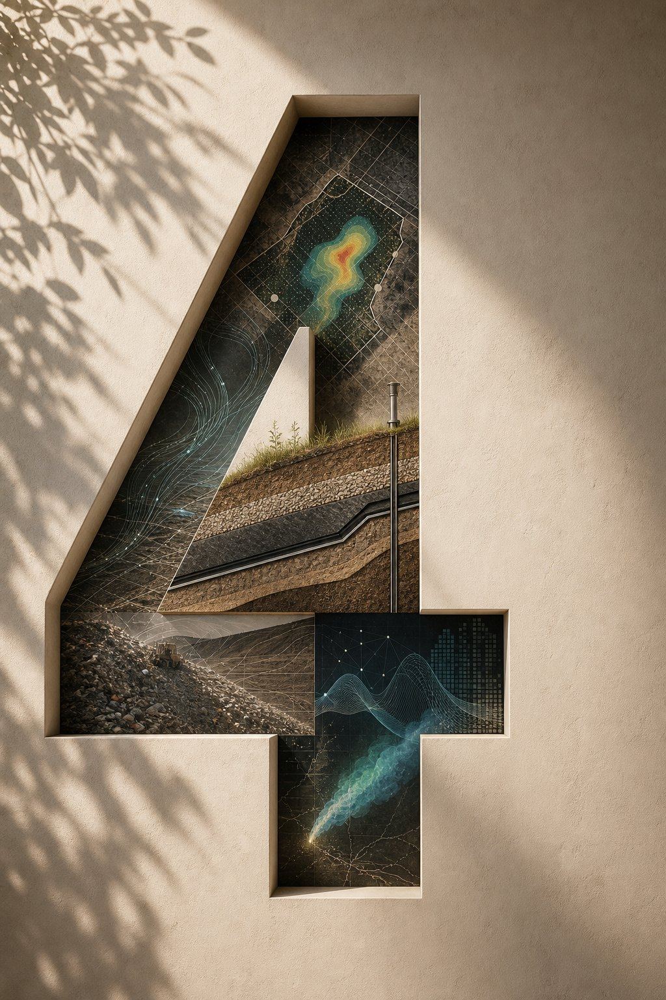
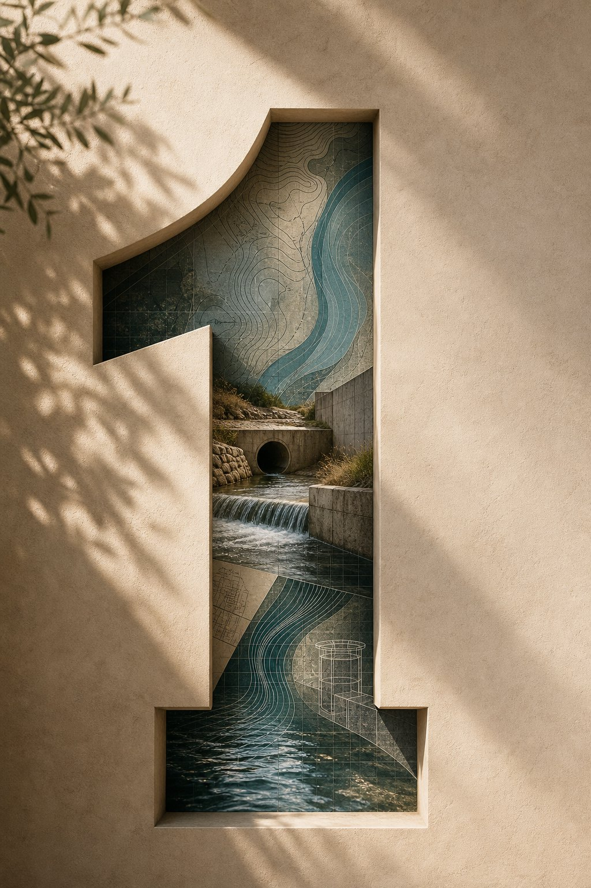

Civil + Environmental Engineering
Meshach Ando
Water Resources
Environmental Systems
Geotechnical + Field Engineering
Research

Four Entry Paths
Focused portfolios with one connected research backbone.

01 Water Resources + H&H Stormwater, drainage, hydraulics, modeling, and GIS. 02
Environmental + Solid Waste
Landfills, methane, PFAS, GIS, and atmospheric modeling.
02
Environmental + Solid Waste
Landfills, methane, PFAS, GIS, and atmospheric modeling.
 03
Geotechnical + Civil Field
Materials, field work, QA/QC, and waste containment.
04
Research
Methane emissions, FOD models, SEM, satellite data, and PFAS.
03
Geotechnical + Civil Field
Materials, field work, QA/QC, and waste containment.
04
Research
Methane emissions, FOD models, SEM, satellite data, and PFAS.
Technical Stack
Engineering
HEC-RAS | EPA SWMM | Civil 3D | Autodesk Storm and Sanitary Analysis
GIS
ArcGIS Pro | Georeferencing | Spatial Analysis | Map Production
Programming
Python | Excel/VBA | Data Cleaning | Visualization | Automation
Research
FOD Models | SEM | Satellite Observations | Gaussian Dispersion | Monte Carlo
Contact
Available for engineering, research, and portfolio conversations.
Email meshachando.apply@gmail.com
Academic Email n01592462@unf.edu
LinkedIn linkedin.com/in/meshachando
GitHub github.com/meshando-unf
ORCID 0009-0002-5048-3672